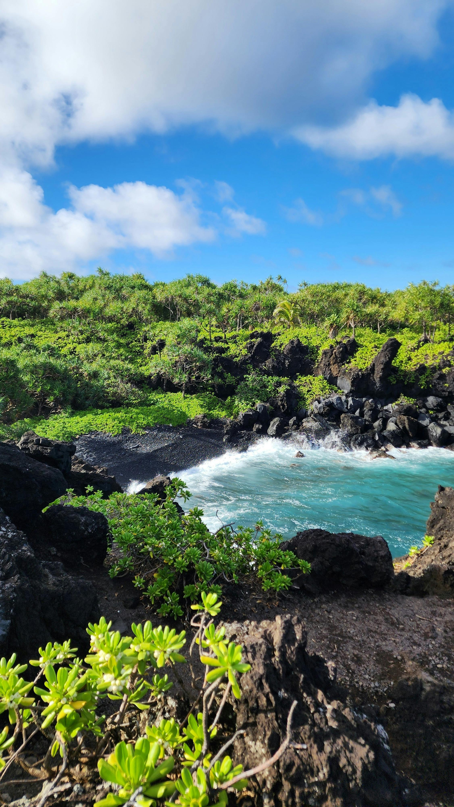

Island Exploring and Relaxation
This Kauai itinerary is for travelers who want beaches, scenic views, local food, and quiet moments surrounded by nature.
Back to Home
Daily Itinerary
Day 1: Arrival and Beach Sunset
Arrive, pick up a rental car, and settle into your stay. Keep the evening simple with a nearby beach walk and sunset dinner.
Day 2: North Shore Exploring
Visit scenic overlooks, beaches, and local shops. Build in time for photos and slower stops throughout the day.
Day 3: Hiking and Waterfalls
Plan a morning hike or waterfall visit while temperatures are cooler. Spend the afternoon relaxing at the beach.
Day 4: Scenic Drive and Final Dinner
Take a scenic drive, stop at viewpoints, and enjoy one final relaxed beach afternoon before a special dinner.
Trip Tips
- Renting a car makes this trip much easier.
- Check weather conditions before hiking.
- Pack sunscreen, water, and comfortable shoes.